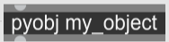
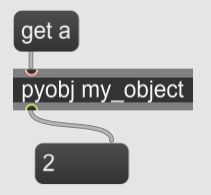
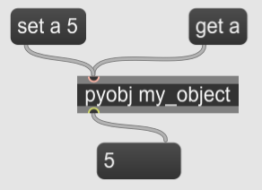
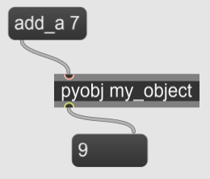

A Python object added to the Pymax system (using either pymax.add_object() or pymax.add_class()) with the name “my_object” can be called by pyobj object with the name as its only argument:
In Python:
from pymaxmusic import pymax
class MyObject():
def __init__(self):
self.a = 2
pymax.open_pymax()
pymax.add_class("my_object", MyObject)
pymax.run_pymax()
Then in Max:

You can get and set the object’s member variables using messages to the object:
 
Use a message to also call an object’s member function:
from pymaxmusic import pymax
class MyObject():
def __init__(self):
self.a = 2
def add_a(self, value):
return self.a + value
pymax.open_pymax()
pymax.add_class("my_object", MyObject)
pymax.run_pymax()
